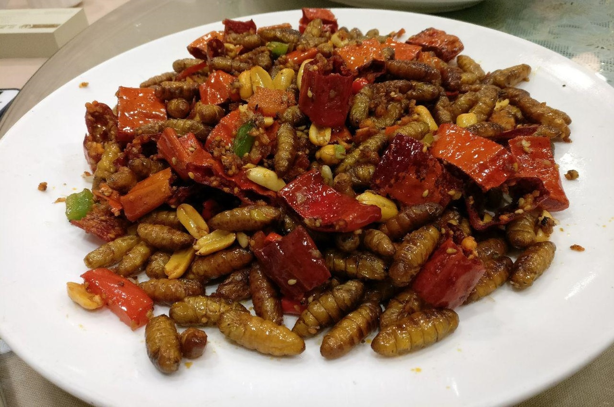
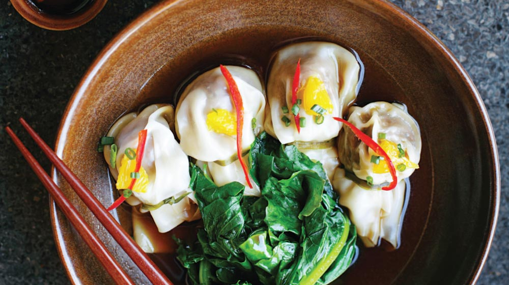
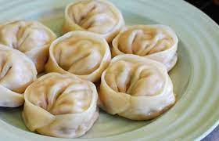

NOODLES
Chinese noodles are prepared with a slightly salty paste, so it is not necessary to add salt to the water when cooking them. Another advantage is that their cooking time is much less than Italian pasta, they usually cook very quickly, in 5 minutes they are ready.

GORJO CHINO
To achieve the expected effects of this type of therapy, it is necessary that you eat the weevils alive and without biting them, you can accompany them with yogurt, gelatin, honey, water, any liquid or soft food that does not require chewing.

chinese eggs
This Chinese rice with vegetables and egg is a simplified version, with few ... To add flavor to this Chinese rice recipe, we add soy sauce. ... throw away the food but we must be creative and use food of advantage.

fritters
These fritters covered with sesame or sesame seeds, are very traditional for the day of the Chinese New Year (whose date is governed by the lunar calendar and therefore varies in the Western calendar), They are delicious and very significant because they represent the family unit.
